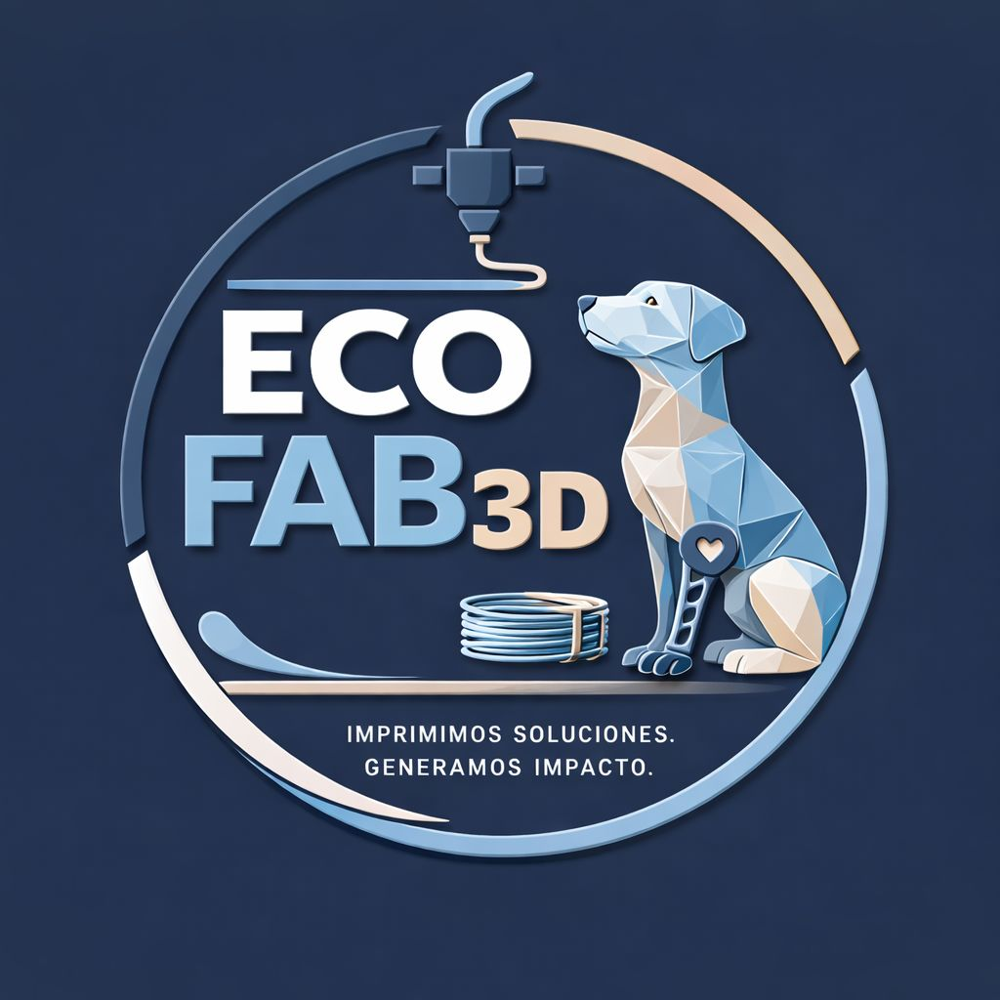

IMPRIMIMOS SOLUCIONES. GENERAMOS IMPACTO.
Prof. Edgardo Sandoval
7mo 8va | Técnicos Mecánicos
E.E.S.T. N° 1 "Alte. G. Brown" - Zárate [cite: 1, 2, 3]

"Transformamos botellas PET en prótesis y piezas para el Hospital Zonal. Tu donación de plástico o insumos tecnológicos es el combustible de este cambio."
07:30 → 11:50
4 Horas Cátedra | Recreo 20 min
07:30 → 11:50
4 Horas Cátedra | Recreo 20 min
I. Ingeniería de Reciclado
II. Fabricación de Pultrusora
III. Producción y Prototipado 3D
IV. Implementación en Comunidad
No solo fabricamos máquinas; diseñamos dignidad. El objetivo último de ECOFAB 3D es proveer soluciones tangibles para el Hospital Zonal de Zárate y refugios locales.
Piezas de asistencia y adaptaciones ergonómicas para rehabilitación en salud pública.
Prótesis livianas y carros de movilidad para animales en hogares de adopción y tránsito.